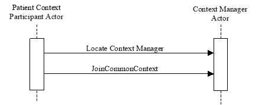
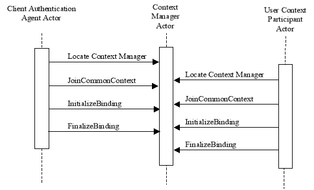

IHE IT Infrastructure (ITI)
Technical Framework
Revision 16.0 – Final Text
This section corresponds to transaction [ITI-5] of the IHE IT Infrastructure Technical Framework. Transaction [ITI-5] is used by the Patient Context Participant, User Context Participant, Client Authentication Agent and Context Manager Actors.
Any of the context participant actors using this transaction (Patient Context Participant, User Context Participant, and Client Authentication Agent) may locate and join a context management session specific to the workstation on which the instigating user is interacting.
A Context Participant shall first locate the instance of the Context Manager via technology specific methods as defined in the HL7 Context Management “CCOW” technology mapping documents. Once the context manager reference is returned, the Context Participant issues a join method to the context manager, which returns a unique participant identifier. User Context Participant and Client Authentication Agent shall use this identifier along with a shared secret as inputs to a two stage secure binding process, which results in the exchange of public keys between the two actors.
If an implementation groups two or more context participant actors, this transaction shall be performed only once on a launch of an application in which those actors are grouped. All grouped actors share the same common context. If at least one of the grouped actors is a User Context Participant or a Client Authentication Agent, this transaction shall include the two-stage secure binding process.
The semantics of the methods used in this transaction are defined in the documents HL7 Context Management “CCOW” Standard: Component Technology Mapping: ActiveX or HL7 Context Management “CCOW” Standard: Component Technology Mapping: Web . A Context Participant can implement either technology. The Context Manager shall support both technologies in order to interoperate with joining participants implementing the technology of their choice.
Actor: Patient Context Participant
Role: Initiates establishment of context session connection with the Context Manager so as to be able to change and follow Patient Subject changes in the common context.
Actor: User Context Participant
Role: Initiates establishment of a secure context session connection with the Context Manager so as to be able to follow User Subject changes in the common context.
Actor: Client Authentication Agent
Role: Initiates establishment of a secure context session connection with the Context Manager so as to be able to perform User Subject changes in the common context.
Actor: Context Manager
Role: Responds to the request to join the context session from the context participant.
HL7 Context Management “CCOW” Standard, Version 1.4:
Technology and Subject Independent Architecture
Component Technology Mapping: ActiveX
Component Technology Mapping: Web
The Join Context Transaction involves a different set of messages depending on the type of subjects the context participant is interested in, either Patient subject, User subject or both Patient and User subjects.
Figure 3.5-1: Patient Subject Join Context Interaction Diagram
Figure 3.5-2: User Subject Join Context Interaction Diagram
To join the common context upon launch of an application, it is necessary for the context participant to locate the Context Manager that supports context management for the user’s workstation. This is achieved by the invocation of the Locate method in accordance with specifications of the HL7 Context Management “CCOW” Standard .
The Locate method is triggered by the user launch of an application that contains one of the following actors: Patient Context Participant, User Context Participant or Client Authentication Agent.
In a Web/HTTP implementation, Locate is defined as a method of the ContextManagementRegistry interface. The IHE Context Manager provides this interface for the context participants to call upon, and thus implements the CCOW defined Context Management Registry, which is used to locate the appropriate instance of the Context Manager.
In an ActiveX implementation, the context participants determine the location of the instance of Context Manager from the operating system registry.
The Locate method invocation is specific to the Web technology mapping. In this case, the Content Manager shall return the valid URL of the Context Manager instance or a CCOW defined UnableToLocate exception. Refer to the HL7 Context Management “CCOW” Standard: Component Technology Mapping: Web/HTTP , Chapter 3 for the details of the response specifications.
The JoinCommonContext method is invoked by the one of the following actors: Patient Context Participant, User Context Participant or Client Authentication Agent.
The JoinCommonContext method is triggered by the valid response of the Locate method with a reference to the context manager.
JoinCommonContext is defined as a method on the ContextManager interface. It shall be invoked by a Context Participant to complete the establishment of the secure context session. A Context Participant shall provide parameters for this method as specified in the CCOW Standard.
Refer to the HL7 Context Management “CCOW” Standard: Technology and Subject-Independent Architecture document, Section 17.3.6.3, for a detailed description of the parameters associated with this method.
If the JoinCommonContext method is successful, the Context Manager shall issue the invoking actor a unique context participant identifier which is to be used until the context session is terminated by either a Context Participant or the Context Manager.
If the method fails a descriptive CCOW exception will be returned.
After the context session is established, the Context Manager shall periodically verify availability of a Context Participant by invoking the Ping method on the ContextParticipant interface as specified in the CCOW Standard. Refer to the HL7 Context Management “CCOW” Standard: Technology and Subject-Independent Architecture document, Section 17.3.7.6, for a detailed description of the parameters associated with this method.
Should the Context Manager need to terminate an established context session (for example, in a case of restart), it shall inform the context participants of such action by invocation of the CommonContextTerminated method on the ContextParticipant interface as specified in the CCOW Standard. Refer to the HL7 Context Management “CCOW” Standard: Technology and Subject-Independent Architecture document, Section 17.3.7.5, for a detailed description of the parameters associated with this method.
The success of this method signifies completion of the Join Context Transaction for the actors intending to participate only in the patient context.
The InitializeBinding method is invoked by the one of the following actors intending to participate in a user context: User Context Participant or Client Authentication Agent.
The InitializeBinding method is triggered by the valid response of the JoinContext method.
InitializeBinding is defined as a method on the SecureBinding interface and allows a Context Participant and Context Manager to verify each other’s identity and supply the Context Manager’s public key to the requesting context participant.
In the invocation of this method, context participant supplies the application identification and a digest produced from that identification concatenated with a shared secret. The shared secret is known in CCOW terms as an applications passcode. The passcode shall be site configurable.
Refer to the HL7 Context Management “CCOW” Standard: Technology and Subject-Independent Architecture document, Section 17.3.12.2, for a description of the parameters associated with this method, to be issued by the Context Participant.
Performing the InitializeBinding method, the Context Manager verifies the identity of a requesting context participant and responds with the message containing its public key. Refer to the HL7 Context Management “CCOW” Standard: Technology and Subject-Independent Architecture document, Section 17.3.12.2, for the specifics of the response formation.
The FinalizeBinding method is invoked by the one of the following actors: User Context Participant or Client Authentication Agent.
The FinalizeBinding method is triggered by the valid response of the InitializeBinding method.
FinalizeBinding is defined as a method on the SecureBinding interface and allows a Context Participant to supply the Context Manager with its public key.
In the invocation of this method, the context participant supplies its public key and a digest digitally signed with its private key.
Refer to the HL7 Context Management “CCOW” Standard: Technology and Subject-Independent Architecture document, Section 17.3.12.3, for a description of the parameters associated with this method, to be issued by the Context Participant.
Performing the FinalizeBinding method, the Context Manager verifies the identity of a requesting context participant and accepts or rejects its public key. Refer to the HL7 Context Management “CCOW” Standard: Technology and Subject-Independent Architecture document, Section 17.3.12.3, for the specifics of the response formation.
The success of this method signifies completion of the Join Context Transaction for the actors intending to participate in the user context.